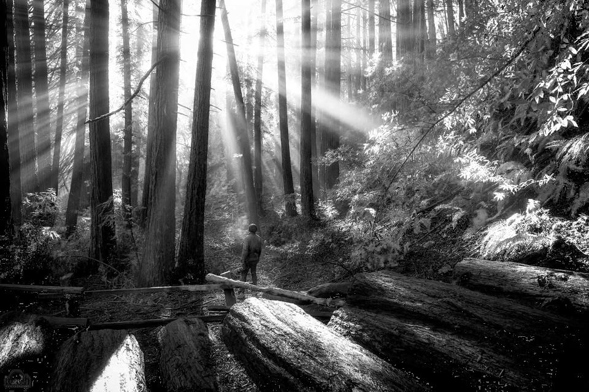

HSL / Color and B&W Mix
Change one color without touching the others: make greens more golden, calm down orange skin, darken a blue sky. Point Color does the same for one exact color you pick. In Black & White, the same panel decides how bright each color becomes in gray.
The eight colors
Pick Mixer at the top of the panel. Red, Orange, Yellow, Green, Aqua, Blue, Purple and Magenta each have three sliders. Neighboring colors blend smoothly, and grays, whites and the faint color noise in dark areas are never affected.
- Targeted Adjustment (◎), then show Hue, Saturation or Luminance one at a time, or All 24 sliders.
- Each track is painted with the colors that end of the slider gives, so you can see which way to drag.
Hue
Shifts a color toward its neighbors. Green toward yellow gives autumn foliage; blue toward aqua gives tropical water.
Saturation
Makes one color stronger or weaker. Turning down Orange and Red calms skin and wood; turning up Blue deepens a sky. At −100 a color turns gray at the brightness you saw it, so a deep blue sky becomes a dark gray, not a pale one.
Luminance
Makes one color brighter or darker. Darkening Blue makes skies dramatic; lightening Orange brightens faces.
Targeted Adjustment
Click ◎ next to the channel buttons, then drag up or down on the photo over the color you want to change: the sliders for that color move together (a sky moves Blue and a little Aqua, say). In All, ◎ is a menu: choose Hue, Saturation or Luminance first. Each drag is one step in History; Esc puts the tool away. It works the same way in Tone Curve and the B&W Mix.
Point Color
For one exact color rather than a whole band: a skin tone, a jacket, the green of one plant.
- Eyedropper and swatches: click the eyedropper, then the color in the photo. Up to four swatches; click one to edit it, right-click it to delete it.
- Range widens or narrows which colors count as “this color”. Uniformity pulls them toward the picked color, evening out blotchy skin or a patchy sky (beyond Lightroom, after Capture One's skin tone tool).
- Visualize Range shows only the colors the swatch changes; the rest of the photo turns gray.
- Hue
- Turns the picked color toward its neighbors, up to 30°.
- Saturation
- Makes it stronger or weaker.
- Luminance
- Makes it brighter or darker.
B&W Mix
When Treatment is Black & White (press V), this panel shows the B&W Mix instead of HSL: eight sliders that set how light or dark each color becomes in gray, like colored filters on black and white film.
 B&W Mix at 0
B&W Mix at 0
Green +90, Yellow +80, Orange −60Classic filters. Darken Blue for a dramatic sky (a red filter). Lighten Orange and Red for smooth skin. Lighten Green and Yellow for bright foliage.
◎ works here too: drag up or down on a color in the photo to make its gray lighter or darker. Vibrance and Saturation have no effect in Black & White. Color Grading still works, for toned prints (Sepia, Selenium in the Black & White presets).